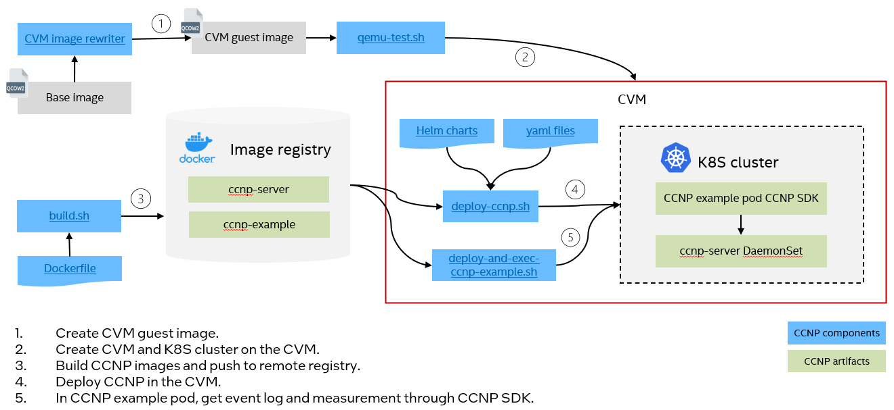

CCNP Deployment Guide in Kubernetes Cluster¶
Below diagram illustrates CCNP deployment process. In this document, it will use Intel TDX guest(TD) as an example of CVM and deploy CCNP on Intel TD nodes.
{kind=link}
Prepare a K8S cluster with TD as worker nodes¶
You can either create a K8S cluster in the TD or let the TD join an existing K8S cluster. Please choose one of the following step to make sure the K8S cluster is prepared with the TD running in it. CCNP will be deployed on the TD.
Option 1: Create a K8S cluster on the TD¶
After TDs are started, users need to setup a K8S cluster in the TDs. It’s recommended to use K3S to start a lightweight Kubernetes cluster for experimental purpose.
Or you can refer to the k8s official documentation to setup a cluster.
NOTE: If the cluster has only one node (master node), the taint on the node needs to be removed.
Option 2: Add the TD to an existing K8S cluster¶
After TDs are started, users can let the TDs join an existing K8S cluster. Please refer to the k8s official documentation for detailed steps.
Deploy CCNP¶
The following scripts can help to generate CCNP images and deploy them in the TD nodes. build.sh can run on either host or TD. Other scripts are supposed to run in the TD.
build.sh: The tool will build docker images and push them to remote registry if required. Skip it if you already have docker images prepared.
prerequisite.sh: This tool will complete the prerequisites for deploying CCNP on Ubuntu. For other distributions, you can follow the manual steps in Prerequisite Manually.
deploy-ccnp.sh: The tool will deploy CCNP services as DaemonSet on TDs in the K8S cluster.
deploy-ccnp-example.sh: The tool will deploy an example pod with CCNP SDK installed.
exec-ccnp-example.sh: The tool will show getting event logs, measurement and perform verification using CCNP in the pod.
Prerequisite¶
The prerequisite steps are required for CCNP deployment. Run prerequisite.sh in the TD.
$ cd script
$ sudo ./prerequisite.sh
Deploy CCNP services¶
CCNP deployment tool will deploy TDX device plugin and DaemonSets for CCNP event log, measurement and quote. Run below scripts on each TD node.
# Deploy CCNP with user specified remote registry and image tag
$ sudo ./deploy-ccnp.sh -r <remote registry> -g <tag>
e.g.
$ sudo ./deploy-ccnp.sh -r test-registry.intel.com/test -g 0.3
# Delete existing CCNP and Deploy CCNP with user specified remote registry and image tag
$ sudo ./deploy-ccnp.sh -r <remote registry> -g <tag> -d
After it’s successful, you should see helm release ccnp-device-plugin and 3 DaemonSets in namespace ccnp.
$ sudo helm list
NAME NAMESPACE REVISION UPDATED STATUS CHART APP VERSION
ccnp-device-plugin default 1 2023-12-27 08:12:05.814766198 +0000 UTC deployed ccnp-device-plugin-0.1.0 latest
$ sudo kubectl get ds -n ccnp
NAME DESIRED CURRENT READY UP-TO-DATE AVAILABLE NODE SELECTOR AGE
ccnp-server 1 1 1 1 1 intel.feature.node.kubernetes.io/tdx-guest=enabled 24h
$ sudo kubectl get pods -n ccnp
NAME READY STATUS RESTARTS AGE
ccnp-server-mqfjx 1/1 Running 2 (39s ago) 24h
CCNP Usage Example¶
The script deploy-ccnp-example.sh will deploy an example pod with CCNP SDK installed. The script exec-ccnp-example.sh will use CCNP SDK to collect event log, measurement and perform verification in the example pod.
Deploy example pod
$ cd script
# Deploy CCNP example pod
$ sudo ./deploy-ccnp-example.sh -r <remote-registry> -g <tag>
Get Pod measurement, event logs, CC report and verify event logs using CCNP SDK.
# Get measurement
$ sudo ./exec-ccnp-example.sh -m
# Get event logs
$ sudo ./exec-ccnp-example.sh -e
# Get CC report
$ sudo ./exec-ccnp-example.sh -r
# Verify event logs with measurements
$ sudo ./exec-ccnp-example.sh -v
The example output of verification can be found at sample-output-for-container-measurement.txt and sample-output-for-container-eventlog.txt.
(Optional) CCNP Prerequisite Manual Steps¶
NOTE: Below are manual Steps of CCNP prerequisite for your reference. They can be skipped if prerequisite.sh is run successfully.
Basically the prerequisite.sh complete below steps to ensure helm, docker and pip are installed and check whether file permission is set correctly.
You can also complete them following below steps manually.
Install Helm on the TD nodes. Please refer to the HELM quick start.
Install docker on the TD nodes. Please refer to Get Docker.
Install python3-pip on the TD nodes. Please refer to pip document.
Set access permission to TD device node and ccnp working directory on the TD nodes.
$ sudo mkdir -p /etc/udev/rules.d
$ sudo touch /etc/udev/rules.d/90-tdx.rules
# Check TD device node on TD
$ ls /dev/tdx*
# If above output is "/dev/tdx-guest"
$ sudo bash -c 'echo "SUBSYSTEM==\"misc\",KERNEL==\"tdx-guest\",MODE=\"0666\"">/etc/udev/rules.d/90-tdx.rules'
# If above output is "/dev/tdx_guest"
$ sudo bash -c 'echo "SUBSYSTEM==\"misc\",KERNEL==\"tdx_guest\",MODE=\"0666\"">/etc/udev/rules.d/90-tdx.rules'
# make the udev setup effective
$ sudo udevadm trigger
$ sudo touch /usr/lib/tmpfiles.d/ccnp.conf
$ sudo bash -c 'echo "D /run/ccnp/uds 0757 - - -">/usr/lib/tmpfiles.d/ccnp.conf'
# make the directory setup effective by running below command or restarting the node
$ sudo systemd-tmpfiles --create